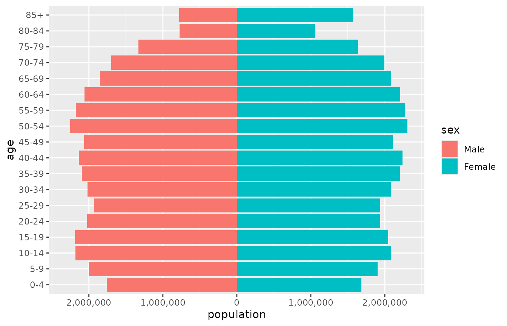
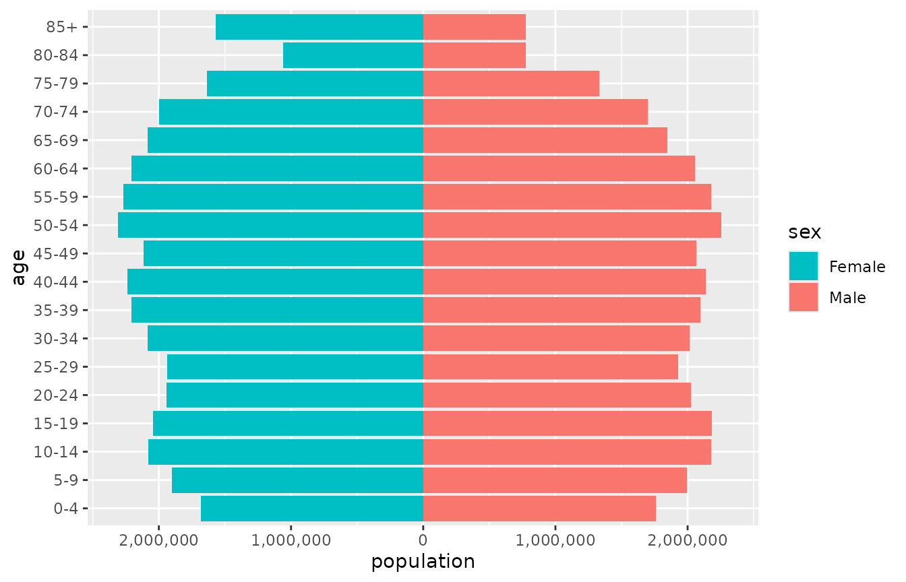
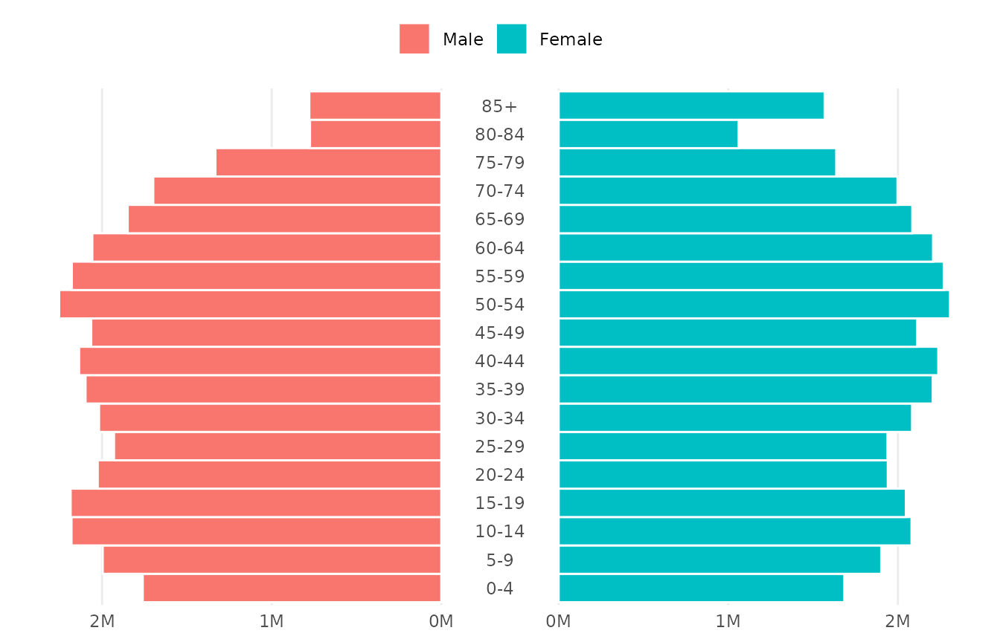
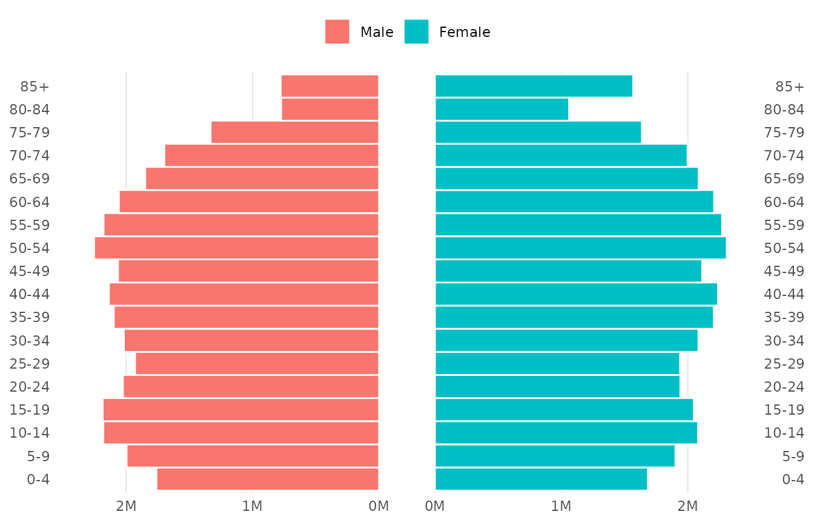
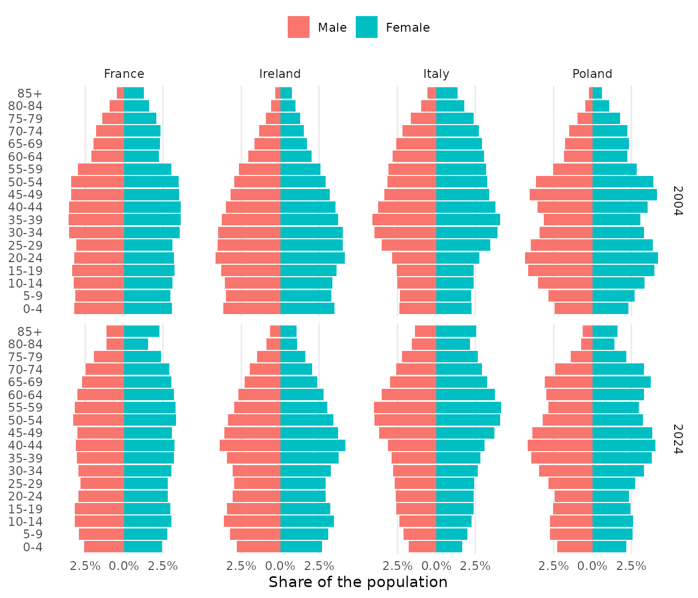
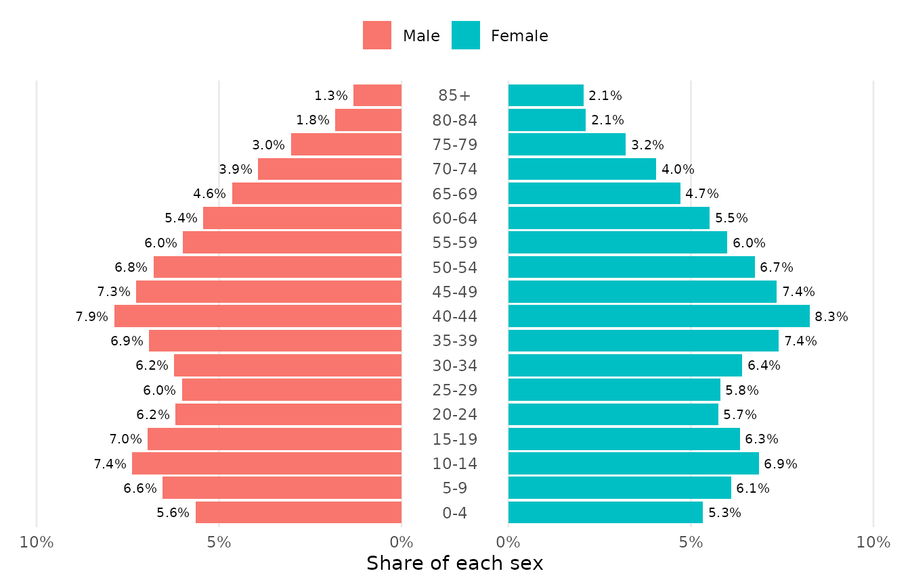
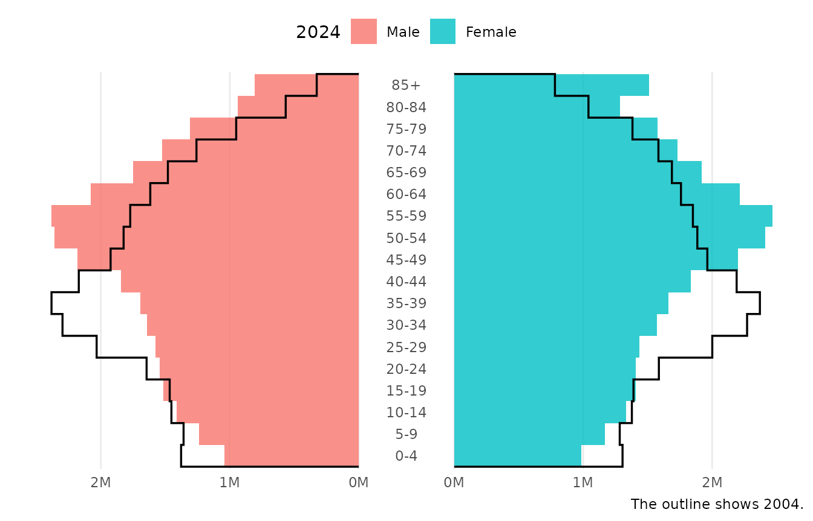
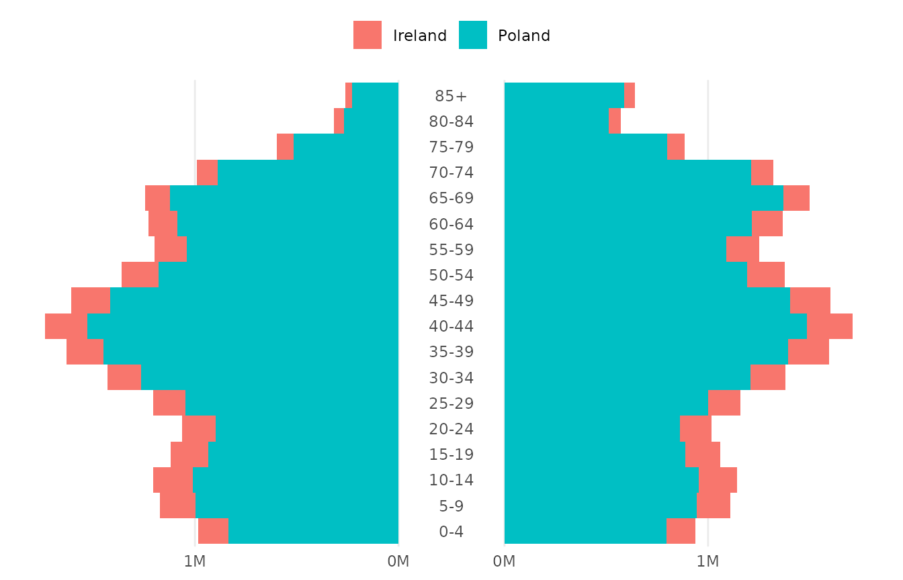
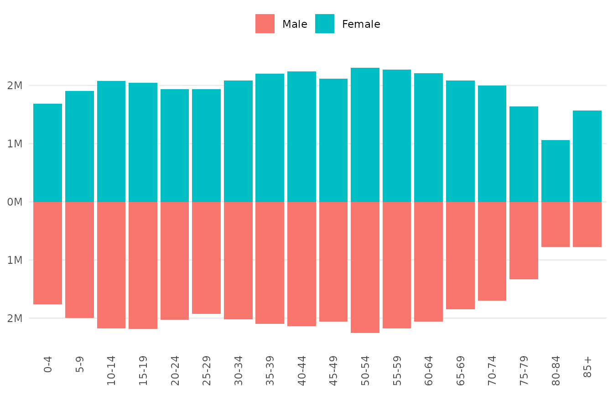

A population pyramid shows a population by age group and sex as two bar charts set back to back, with the age groups stacked from youngest at the bottom to oldest at the top. ggpyramid builds it from ordinary ggplot2 layers, so scales, facets, themes and further layers work as they do in any other plot.
The examples use europe_pop, the population of four
European countries in 2004 and 2024 by five-year age group and sex, from
Eurostat:
head(europe_pop)
#> country year age sex population
#> 1 France 2004 0-4 Male 2003057
#> 2 France 2004 5-9 Male 1955935
#> 3 France 2004 10-14 Male 2029376
#> 4 France 2004 15-19 Male 2089909
#> 5 France 2004 20-24 Male 2005783
#> 6 France 2004 25-29 Male 1918838A first pyramid
geom_pyramid() draws the bars. Map age to
y, the side to fill, and the population to
x. coord_pyramid() labels both halves of the
value axis without a minus sign and gives them the same range.
france <- subset(europe_pop, country == "France" & year == 2024)
ggplot(france, aes(x = population, y = age, fill = sex)) +
geom_pyramid() +
scale_x_continuous(labels = scales::label_comma()) +
coord_pyramid()
The first level of the side variable goes on the left, so
Male is drawn on the left here because it is the first
level of sex. left in
coord_pyramid() chooses the other side for every layer of
the plot at once. The legend keeps the order of the levels, and
breaks in the fill scale reorders it to match:
ggplot(france, aes(x = population, y = age, fill = sex)) +
geom_pyramid() +
scale_x_continuous(labels = scales::label_comma()) +
scale_fill_discrete(breaks = c("Female", "Male")) +
coord_pyramid(left = "Female")
A single layer can take another side with
position_pyramid(left = ...), which overrides the
coordinate system. Without coord_pyramid(), as in a
vertical pyramid, reorder the levels of the side variable instead.
geom_pyramid() sums the value it is given within each
age group, and counts rows when no value is mapped, so the same code
works for aggregated tables and for individual records:
# One row per person
ggplot(people, aes(y = age_group, fill = sex)) +
geom_pyramid()Placing the age axis
coord_pyramid() places the age axis on the
"left" (the default), on the "right", on
"both" sides, or in the "centre", where the
labels sit in a gap between the two halves. theme_pyramid()
removes the grid lines that run along the bars and moves the legend to
the top.
p <- ggplot(france, aes(x = population, y = age, fill = sex)) +
geom_pyramid(width = 1, colour = "white") +
scale_x_continuous(
labels = scales::label_number(scale = 1e-6, suffix = "M")
) +
labs(x = NULL, y = NULL, fill = NULL) +
theme_pyramid()
p + coord_pyramid(age_axis = "centre")
The width of the gap is a proportion of the panel, 0.12
by default. Widen it with gap when the age labels are long,
or open a narrow gap with the age axis elsewhere. A gap draws the zero
of the value axis on both of its edges, so keep it wide enough for two
labels:
p + coord_pyramid(age_axis = "both", gap = 0.08)
Proportions and facets
denominator = "total" shows each bar as a share of the
whole population in the panel, and denominator = "side" as
a share of its own side. Shares make populations of different sizes
comparable, and each facet panel gets its own denominator.
ggplot(europe_pop, aes(x = population, y = age, fill = sex)) +
geom_pyramid(denominator = "total") +
scale_x_continuous(labels = scales::label_percent()) +
coord_pyramid() +
facet_grid(year ~ country) +
labs(x = "Share of the population", y = NULL, fill = NULL) +
theme_pyramid()
Labels
geom_pyramid_text() writes the value of each bar at its
end. It aggregates the data in the same way as the bars, and
labels formats the numbers. Labels go
"outside" the bars by default, or "inside"
them.
ireland <- subset(europe_pop, country == "Ireland" & year == 2024)
ggplot(ireland, aes(x = population, y = age, fill = sex)) +
geom_pyramid(denominator = "side") +
geom_pyramid_text(
denominator = "side",
labels = scales::label_percent(accuracy = 0.1),
size = 2.6
) +
scale_x_continuous(
labels = scales::label_percent(),
expand = expansion(mult = 0.15)
) +
coord_pyramid(age_axis = "centre") +
labs(x = "Share of each sex", y = NULL, fill = NULL) +
theme_pyramid()
Comparing two populations
geom_pyramid_outline() traces the edge of a pyramid as a
stepped line. Over the bars of one year it shows how the population has
changed since another. Here Italy in 2024 is drawn as bars and Italy in
2004 as the outline.
italy <- subset(europe_pop, country == "Italy")
ggplot(italy, aes(x = population, y = age, fill = sex)) +
geom_pyramid(data = subset(italy, year == 2024), width = 1, alpha = 0.8) +
geom_pyramid_outline(data = subset(italy, year == 2004), linewidth = 0.6) +
scale_x_continuous(
labels = scales::label_number(scale = 1e-6, suffix = "M")
) +
coord_pyramid(age_axis = "centre") +
labs(
x = NULL,
y = NULL,
fill = "2024",
caption = "The outline shows 2004."
) +
theme_pyramid()
Subgroups within each side
The side of a bar comes from fill unless the
side aesthetic is mapped. Mapping side
separately frees fill for subgroups, which are stacked
within each side:
recent <- subset(europe_pop, year == 2024 & country %in% c("Ireland", "Poland"))
ggplot(recent, aes(x = population, y = age, fill = country, side = sex)) +
geom_pyramid(width = 1) +
scale_x_continuous(
labels = scales::label_number(scale = 1e-6, suffix = "M")
) +
coord_pyramid(age_axis = "centre") +
labs(x = NULL, y = NULL, fill = NULL) +
theme_pyramid()
Vertical pyramids
Map age to x for a vertical pyramid.
coord_pyramid() is for horizontal pyramids only, so use
scale_y_pyramid() to label the value axis and
theme_pyramid(flipped = TRUE) for the grid.
ggplot(france, aes(x = age, y = population, fill = sex)) +
geom_pyramid() +
scale_y_pyramid(labels = scales::label_number(scale = 1e-6, suffix = "M")) +
labs(x = NULL, y = NULL, fill = NULL) +
theme_pyramid(flipped = TRUE) +
theme(axis.text.x = element_text(angle = 90, vjust = 0.5, hjust = 1))
How the sides are drawn
position_pyramid() makes the values on the left side
negative inside the plot, and stacks subgroups on each side away from
the centre. Your data stays as it is. The signs matter when you set
limits or draw reference lines on the left side, which take negative
values:
geom_vline(xintercept = c(-1e6, 1e6), linetype = "dashed")
coord_pyramid(xlim = c(-3e6, 3e6))Because the mirroring is done by the position, any layer can join a
pyramid with position = "pyramid", and the plot stays
correct with another coordinate system. Only the presentation that
coord_pyramid() adds, such as the absolute labels and the
centre gap, depends on the coordinate system.